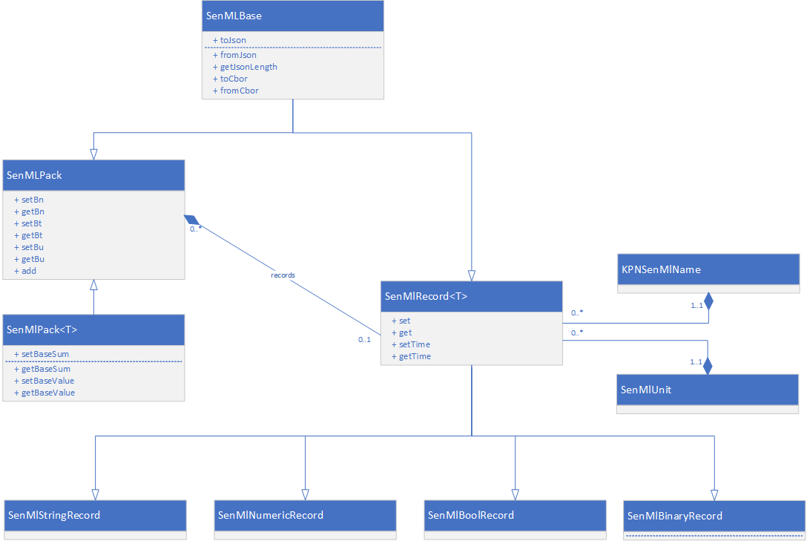

Introduction
Welcome to the KPN SenML API documentation! You can use our library for the creation of senml documents on embedded devices so you can transport and/or recieve data in a uniform way to and from devices using a communication protocol of your choice.
key features
Note: The python versions do not provide extended support for memory restricted devices
- Object oriented design.
- built in support for senml's unit registry
- extendible for new data types
- makes use of (but doesn't restrict to) KPN's predefined list of record names.
- direct support to read/write in json and cbor format.
- automatically adjusts record values with respect to base time, base value & base sum.
- The C++ version of the library is optimized for devices with restricted memory requirements (runs on AVR systems with 2kb ram).
getting started
installation
Get it from github
You can import it directly from within the mbed online editor. Search for the library senml-kpn
Install using the pip command:
pip intall senmlkpn
Get it from github
Your project directory should look like this:
- boot.py
- main.py
- lib
- cbor_decoder.py
- cbor_encoder.py
- senml_kpn_names.py
- senml_pack.py
- senml_record.py
- senml_unit.py
- Get the library. You can find the language appropiate link to the right.
- Installation:
- arduino:
- Follow these instructions to install the library in the arduino ide.
- mbed: on the mbed online editor:
- create or open a project
- right click on the project and select 'import library/from import wizard'
- search for senml-kpn
- double click on the search result which will start the import process.
- python: use pip to install the library
- micropython:
- download the library
- extract the content of the zip file and put the library files (don't need the examples in your own project) in the 'lib' directory of your project.
- arduino:
usage
#include <kpn_senml.h>
#include <kpn_senml.h>
from kpn_senml import *
from kpn_senml import *
- First off, you need to include the library in your sketch or application. So put the example code (in the right side panel) somewhere near the top of your source.
SenMLPack doc("device_name");
SenMLPack doc("device_name");
doc = SenmlPack("device_name")
doc = SenmlPack("device_name")
- Next, you have to declare a variable of type 'SenMLPack', which will function as the document that contains all your measurement values. This can be a global or local to a function.
void loop(){
int val = analogRead(A1);
SenMLFloatRecord rec(KPN_SENML_TEMPERATURE, SENML_UNIT_DEGREES_CELSIUS, val);
doc.add(&rec);
}
int main() {
// check mypin object is initialized and connected to a pin
if(mypin.is_connected()) {
printf("mypin is connected and initialized! \n\r");
}
mypin.mode(PullNone);
while(1) {
int val = mypin.read();
SenMLFloatRecord rec(KPN_SENML_TEMPERATURE, SENML_UNIT_DEGREES_CELSIUS, val);
doc.add(&rec);
}
}
while True:
with SenmlRecord(SenmlNames.KPN_SENML_TEMPERATURE, unit=SenmlUnits.SENML_UNIT_DEGREES_CELSIUS, value=23.5) as rec:
doc.add(rec)
while True:
with SenmlRecord(SenmlNames.KPN_SENML_TEMPERATURE, unit=SenmlUnits.SENML_UNIT_DEGREES_CELSIUS, value=23.5) as rec:
doc.add(rec)
- Measurement values are added to the document through objects of the type SenMlRecord (for C++ versions this will be one of it's descendants). These can also be global, statically declared objects or they can be local to a function. These always need to have a value or sum, but sually you also give records a name and measurement unit. The library contains a set of predefined values for both. Although you are free to pick any record name that you want, this is not the case for the units. This list is fixed.
doc.toJson(&Serial); //print to screen
Serial pc(USBTX, USBRX);
doc.toJson(&pc); //print to screen
pc.printf("\n\r");
print(doc.to_json())
print(doc.to_json())
- finally, you can render the senml json string and print it out. In C++, this can be either to a stream or you can render it to a memory buffer. Python always renders to memory.
The resulting code snippet reads the value, stores this measument in a senml record as temperature in degrees celsius and adds this record to the document. Finally, the document object renders a json string to the Serial output, or for python, just prints it to the screen.
At the end of the function, the record is destroyed cause it goes out of scope. This will automatically remove it from the document, so on the next run, the document will be empty again and a new record can be added.
For more examples, see here
details
object oriented: class structure
C++

The root class for all senml documents is called 'SenMlPack'. It defines the base name, base unit and base time of the document. This object can also contain 0, 1 or more SenMlRecords where each record represents a single measurement (or command for actuators).
In order to declare a base value or base sum, you have to use one of SenMLPack's descendents with the correct data type.
The library contains a pre-defined SenMlRecord class for the most common data types: string, boolean, float, integer and binary. But, you can extend this with your own types through the SenMLRecord template for basic data types such as longlong or double. And, if you want to go even deeper, you can extend the SenMLRecord base class, which can be useful for creating records that have multiple values like coordinates. See here for more info.
python
 As you can see, the python version of the library is much simpler compared to the C++ version. This is primarily due to the fact that python automatically resolves data types, so there is no need for complex class structures.
As you can see, the python version of the library is much simpler compared to the C++ version. This is primarily due to the fact that python automatically resolves data types, so there is no need for complex class structures.
The library's setup is very similar to the C++ version: Use a SenMLPack record to represent senml documents. Measurements or actuator commands are declared with SenMLRecords.
names and units
The library defines an enum for all of senml's supported measurement units (as in 'kilogram', 'meter',...). This makes it easier to keep compliance with the senml specifications as you don't have to worry about the exact unit symbols: the library takes care of this.
Similarly, the library also provides an enum (or set of #defines in C++) with all the record names that the KPN network supports.
Although it is possible that you assign your own name to a record, it is recommended to use KPN's naming convention as this allows data to be addressed in a more semantical manner.
Both parameters are supplied through the constructor of the SenMlRecords.
According to the SenML specifications, all names are optional, so you don't have to declare a base name on the SenMLPack object nor a name for SenMLRecords. This makes it harder though to identify your data. In general, it is advisable to specify the name of the device as the base name and the name of the sensor as the record name. Alternatively, you can skip the base name and put both device and sensor name in the record, in this format: device:sensor.
associating records with a document
SenMLFloatRecord rec(KPN_SENML_TEMPERATURE, SENML_UNIT_DEGREES_CELSIUS, val);
doc.add(&rec);
SenMLFloatRecord rec(KPN_SENML_TEMPERATURE, SENML_UNIT_DEGREES_CELSIUS, val);
doc.add(&rec);
SenmlRecord(SenmlNames.KPN_SENML_TEMPERATURE, unit=SenmlUnits.SENML_UNIT_DEGREES_CELSIUS, value=23.5)
doc.add(rec)
SenmlRecord(SenmlNames.KPN_SENML_TEMPERATURE, unit=SenmlUnits.SENML_UNIT_DEGREES_CELSIUS, value=23.5)
doc.add(rec)
You can add records to the document with the function add. This can be done statically (add once at startup and never remove) for devices that will always send out the same document structure with the same records. Or, you can dynamically add records to the document as your application progresses. A common use case for this method is for situations where the device does not have network connectivity at the moment that the measurement is taken, but instead, takes a number of measurements, and, when a connection is available, uploads all the measurements at once. This method is useful to minimize the number of communication packets that a device uses by grouping measurements.
doc.clear();
doc.clear();
doc.clear()
doc.clear()
For documents that work with a dynamically sized list of records, you can clear out the list once the data has been sent.
Alternatively ,when SenMlRecords go out of scope or are deleted, they remove themselves automatically from their root document.
Internally, the C++ version uses a linked list to store the records that it manages. This helps in minimizing the usage of dynamically allocated memory (important for devices with little available ram).
The python versions use standard python arrays to store the data.
gateways
It is possible to transmit/receive SenMLPack objects that contain other SenMLPack objects. This is used by gateways that work as an intermediate for devices that don't have a direct connection with the outside world or which can't speak senml and need a device that performs a translation between the protocol that they understand and senml.
Creating such messages is pretty strait forward, just like you add SenMLRecords to a Pack, you can also add SenMLPack objects. This works for sensor values that need to be sent out and for actuators.
Rendering
Parsing
implementing your own record types
It is possible to create your own, custom SenMlRecord classes. This can be used to provide support for more complex data types than already available in the library. For instance, if you would like to store location info (lat/lng/alt) in a single record instead of 3 individual ones, than you could create a new class that inherits from the SenMlRecord template, provide a struct as template parameter and re-implement the rendering and parsing functions.
You can find an example here.
examples
basic
#include <kpnSenml.h>
SenMlPack doc("device_name");
void init(){
}
void loop(){
int val = analogRead(A1);
SenMlNumericRecord senmlVal(SENML_TEMPERATURE, SENML_CELSIUS, val);
doc.add(senmlVal);
doc.toJson(Serial);
}
Cbor support
#include <kpnSenml.h>
SenMlPack doc("device_name");
void init(){
}
void loop(){
int val = analogRead(A1);
SenMlNumericRecord senmlVal(SENML_TEMPERATURE, SENML_CELSIUS, val);
doc.add(senmlVal);
doc.toCbor(Serial);
}
Statically declared actuators
#include <kpnSenml.h>
void onSwitch(bool value){
digitalWrite(D1, value);
}
SenMlPack doc("device_name");
SenMlBoolRecord senmlVal(SENML_SWITCH, onSwitch);
void init(){
doc.add(senmlVal);
}
void loop(){
if(Serial.available()){
if(doc.fromJson(Serial)){
Serial.print("end");
}
}
}
Dynamically declared actuators
#include <kpnSenml.h>
void onSwitch(bool value){
digitalWrite(D1, value);
}
void onOtherSenMl(const char* name, const char* unit, BYTE dataType, void* value){
Serial.print("found unknown record in input: "); Serial.println(name);
}
SenMlPack doc("device_name", onOtherSenMl);
SenMlBoolRecord senmlVal(SENML_SWITCH, onSwitch);
void init(){
doc.add(senmlVal);
}
void loop(){
if(Serial.available()){
if(doc.fromCbor(Serial)){
Serial.print("end");
}
}
}
Custom record
api documentation
If you are building up a senml message than it's best that to specify the base name of the senml document in order to declare the name of the device. Other parameters can be: - the base unit - a callback function used to relay actuator commands found during parsing of a senml message.